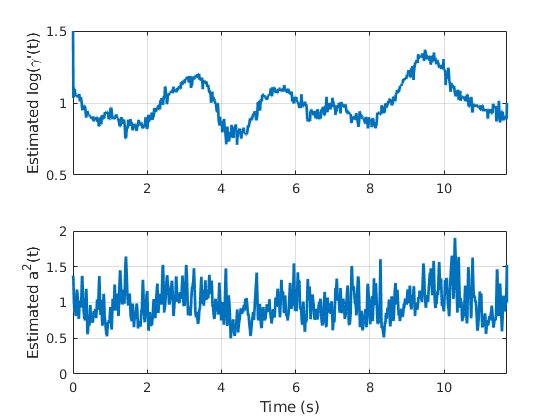
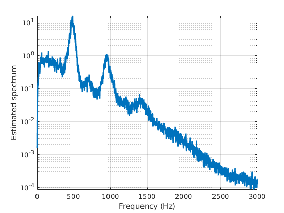
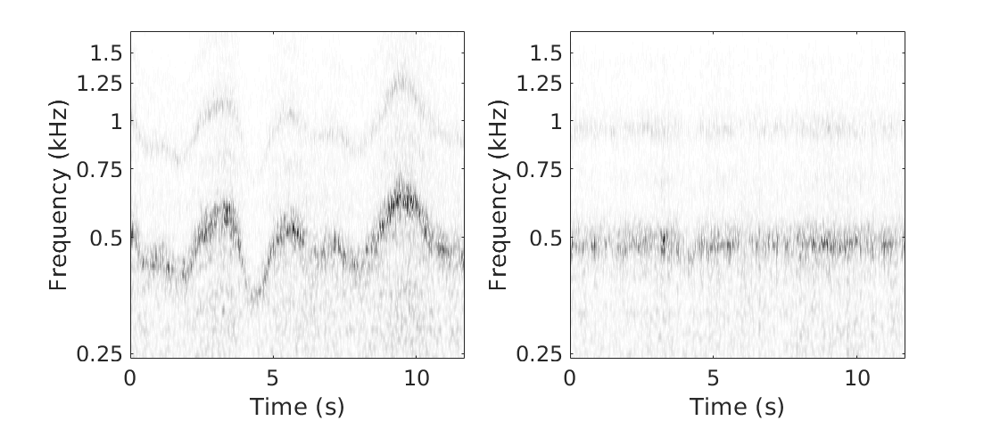

Spectral estimation from a wind sound recording
Copyright (C) 2018 Adrien MEYNARD
This program is free software; you can redistribute it and/or modify it under the terms of the GNU General Public License as published by the Free Software Foundation; either version 3 of the License, or (at your option) any later version.
This program is distributed in the hope that it will be useful, but WITHOUT ANY WARRANTY; without even the implied warranty of MERCHANTABILITY or FITNESS FOR A PARTICULAR PURPOSE. See the GNU General Public License for more details.
You should have received a copy of the GNU General Public License along with this program. If not, see http://www.gnu.org/licenses/.
Author: Adrien MEYNARD Email: adrien.meynard@univ-amu.fr Created: 2018-05-23
Contents
Load signal
clear all; close all; clc; warning off; addpath('cwt'); addpath('deform_estimation'); addpath('analysis'); load('signals/wind'); T = length(y);
Joint estimation
Dt = 400; % temporal subsampling for the deformation estimation dgamma0 = ones(1,T); % gamma'(t) initialization a0 = ones(1,T); % a(t) initialization wav_typ = 'sharp'; % wavelet type (cf. cwt_JEFAS.m) wav_paramWP = 20; % corresponding parameter for warping estimation wav_param = 500; % corresponding parameter for spectrum and AM estimations NbScales = 125; scalesAM = 2.^(linspace(2.5,6,NbScales)); subrate = 3; % subsampling step for the scales to ensure the covariance invertibility scalesWP = scalesAM(1:subrate:end); r = 1e-5; % regularization parameter stopWP = 2e-2; % minimal gap between two steps in the gradient itWP = 6; % number of gradient iterations Nf = 2500; % number of frequencies for spectrum estimation NbScalesS = 110; scalesS = 2.^(linspace(-1,7,NbScalesS)); % for spectrum estimation Nit = 10; % maximal number of iterations in the joint estimation stop_crit = 25e-3; % relative update threshold paramWAV = {wav_typ,wav_param,wav_paramWP}; paramWP = {scalesWP,itWP,stopWP}; paramS = {scalesS,Nf}; paramAM = {'AM',scalesAM,r}; % model with time warping and amplitude modulation tic; [aML, dgammaML, Sx, evol_crit] = estim_altern(y,Dt,dgamma0,a0,paramWAV,paramWP,paramAM,paramS,stop_crit,Nit); toc;
Iteration 1 Relative update WP: Inf % Relative update AM: 22.14 % Iteration 2 Relative update WP: 16.05 % Relative update AM: 0.04 % Iteration 3 Relative update WP: 2.79 % Relative update AM: 0.01 % Iteration 4 Relative update WP: 2.23 % Relative update AM: 0.01 % Elapsed time is 557.613558 seconds.
Analysis
% Deformations: t = 0:(1/Fs):((T-1)/Fs); figure; subplot(2,1,1);plot(t,dgammaML,'linewidth',2); ylabel('Estimated log(\gamma''(t))'); axis tight; grid on; ylim([0.5 1.5]); %set(gca,'FontSize',24); subplot(2,1,2);plot(t,aML,'linewidth',2); xlabel('Time (s)'); ylabel('Estimated a^2(t)'); axis tight; grid on; ylim([0 2]); %set(gca,'FontSize',24); % Spectrum z = statAMWP(y,aML,dgammaML); alpha = 15; Nff = 50000; Sxw = estim_spec(z,Nff,alpha); freq = linspace(0,Fs,Nff); figure; semilogy(freq,Sxw,'linewidth',2); xlabel('Frequency (Hz)'); ylabel('Estimated spectrum'); axis tight; grid on; xlim([0 3000]); %set(gca,'FontSize',24); % Wavelet transforms: scalesplot = 2.^(linspace(0.5,3.3,250)); dt = 5; xi0 = Fs/4/dt; % wavelet central frequency freqdisp = [1.50 1.25 1.00 0.75 0.50 0.25]; % Displayed frequencies sdisp = log2(xi0./(freqdisp*1e3)); % coreesponding log-scales Wy = cwt_JEFAS(y(1:dt:end),scalesplot,wav_typ,wav_param); Wz = cwt_JEFAS(z(1:dt:end),scalesplot,wav_typ,wav_param); figure; colormap(flipud(gray)) subplot(1,2,1); imagesc(t(1:dt:end),log2(scalesplot),abs(Wy)); xlabel('Time (s)'); ylabel('Frequency (kHz)'); yticks(sdisp); yticklabels(freqdisp); set(gca,'fontsize',18); subplot(1,2,2); imagesc(t(1:dt:end),log2(scalesplot),abs(Wz)); xlabel('Time (s)'); ylabel('Frequency (kHz)'); yticks(sdisp); yticklabels(freqdisp); set(gca,'fontsize',18);  